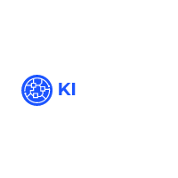

Overview
Purpose
My purpose is to create a website about myself and my professional career to use as a reference for my job search. I believe that having a website about myself shows my skills for development
Audience
My main audience will be people interested in knowing more about my career and hobbies
Branding
Website Logo
Style Guide
Color Palette
Palette URL: https://coolors.co/252323-70798c-f5f1ed-dad2bc-a99985| Primary | Secondary | Accent 1 | Accent 2 |
|---|---|---|---|
| [#252323] | [#70798C] | [#F5F1ED] |
Typography
Heading Font: Ubuntu
I really like this font because its clean and professional
Paragraph Font: Roboto
Its an easy to read and load font, very professional
Normal paragraph example
The best Whitewater Rafting in Colorado, White Water Rafting Company offers rafting on the Colorado and Roaring Fork Rivers in Glenwood Springs. Since 1974, we have been family owned and operated, rafting the Shoshone section of Glenwood Canyon and beyond.
Colored paragraph example
Trips vary from mild and great for families, to trips exclusively for physically fit and experienced rafters. No matter what type of river adventures you are seeking, White Water Rafting Company can make it happen for you.
Navigation
Site Map
Content
Home page
Hi!
I'm kevin, Welcome to my website
Written copy of the website
Thank you for visiting my professional website! I've designed this site to provide you with all the information you need to know about my career.
Whether you're looking for information about my qualifications, such as my CCNA, Pepsico Cybersecurity Champion, and SAFe Scrum Master certifications, or want to learn about my professional objectives and personal interests, you'll find it all here.
On my website, you can easily access my social media accounts, including LinkedIn, Twitter, and Instagram. This way, you can stay up-to-date on my latest projects, professional endeavors, and hobbies.
Images for the Home page


career
As an IT professional, I hold various certifications, including CCNA, Pepsico Cybersecurity Champion, and SAFe Scrum Master. These certifications have helped me stay current with the latest trends and technologies, while also enhancing my skills and knowledge. My CCNA certification validates my ability to configure and troubleshoot medium-sized networks, while my Pepsico Cybersecurity Champion certification ensures that I stay up-to-date with the latest cybersecurity threats and best practices. Finally, my SAFe Scrum Master certification demonstrates my knowledge of Agile methodologies and my ability to manage complex projects. These certifications have been instrumental in advancing my career and will continue to drive my commitment to continuous learning and professional development.
Images for the Page 2

My personal life
My hobbies and interests play a significant role in my life and help me maintain a healthy work-life balance. I believe that pursuing one's passions outside of work is essential for personal well-being and can even enhance professional performance. I'm excited to share more about my personal life and interests on my website, and I hope you find them as interesting as I do.
GET IN TOUCH
One of the fantastic benefits of having a personal website is that it allows me to connect with my audience in multiple ways. One of the most significant advantages is that my website serves as a hub for all my social media accounts, making it easy for visitors to follow me on platforms such as LinkedIn, Twitter, and Instagram. Whether you want to stay up-to-date with my latest professional accomplishments or my personal interests and hobbies, following me on social media is a great way to stay connected.
Images for the Page 3


Wireframes
Create three wireframes for your site. One for each page and list them here